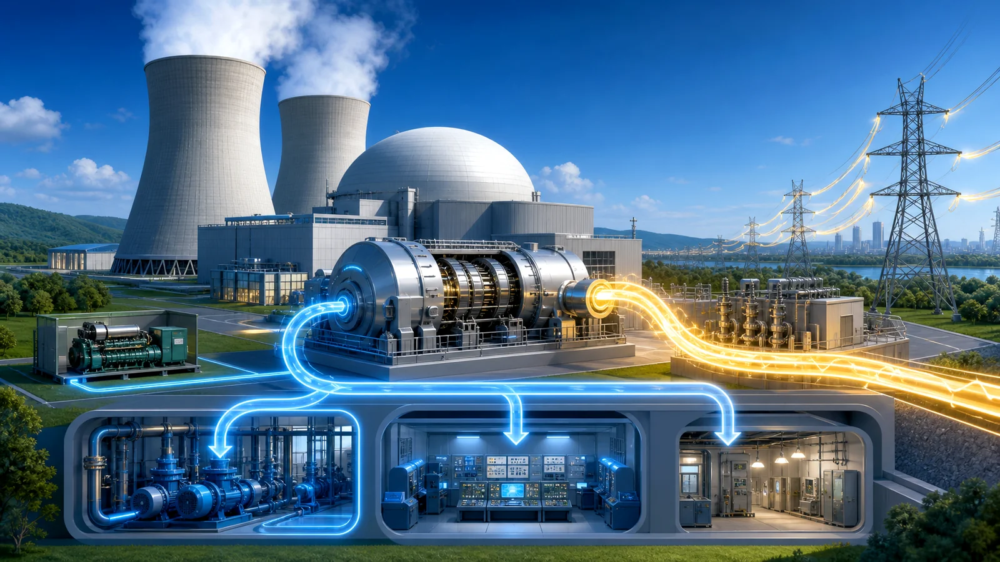
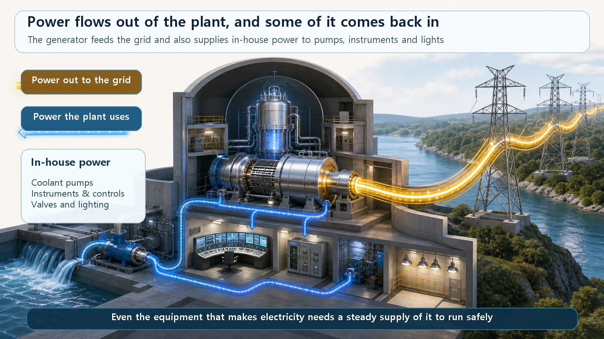
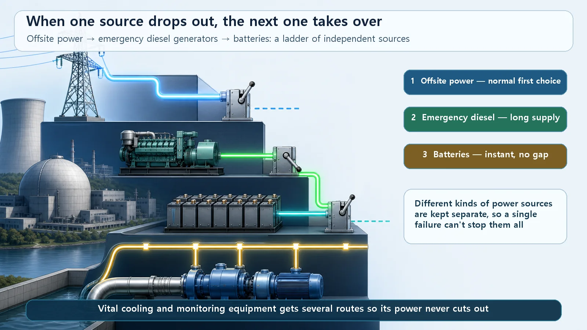

Reactor Types & Plant Systems · 196
The Power Seller Most Afraid of a Blackout — How a Nuclear Plant's Electrical System Is Layered
A nuclear plant sells electricity, yet it guards its own power supply more carefully than almost anyone, because the equipment that cools the core runs on electricity.

A nuclear plant's electrical system carries power in two directions: out to the grid as the plant's product, and back inside as in-house power for the pumps, instruments and controls that keep cooling the core. Because a shut-down reactor still produces decay heat, that in-house power never relies on one source. It is layered as offsite power, then emergency diesel generators, then batteries, so that when one drops out the next takes over.
Which place should worry least about losing electricity? Surely a power plant. A nuclear power plant is the exact opposite: it makes huge amounts of electricity to sell, yet it worries more seriously than almost anyone about the power it needs itself being cut off, and it goes to enormous lengths to prepare for that. Let's look at why, and at the basic structure of a nuclear plant's electrical system.
A power plant afraid of a blackout?
The reason is a peculiar property of the reactor. Even after it is shut down and the chain reaction stops, it doesn't go quiet. The fission products inside keep decaying and giving off heat for a while (decay heat, also called residual heat). It starts fairly strong and fades gradually, but "it's stopped, so we can quit cooling it" simply isn't true. It has to be cooled for a long time.
Who does that cooling? The pumps that push coolant around and add water, the drives that open and close valves, the instruments that report the plant's condition and the controls that act on them. Almost all of them run on electricity. So losing power isn't just the lights going out; it means the hands and feet that keep cooling the core stop moving. For a nuclear plant, a reliable power supply is safety itself. "Do we have electricity?" becomes practically the same question as "Can we keep cooling the core?"
Electricity flowing in two directions
The first step is knowing that electricity here flows in two directions.
The first is power going out. The turbine spins the generator, a transformer steps the voltage way up, and the electricity rides transmission lines out to the grid. This is the plant's product.
The second is power the plant uses itself: the pumps, instruments and lighting needed to run it. This is called in-house power (also "onsite power" or "station service"), meaning electricity used inside the plant site. During normal operation, the plant takes a small slice of the electricity it makes and uses that. It runs itself on its own output.

What if its own power cuts out?
If the plant runs on its own electricity, then the moment the generator stops (the reactor was shut down, something broke, or there was a fault on the grid side), in-house power would seem to vanish too. This is where the real design philosophy shows: in-house power never depends on a single source.
A large hospital makes this easy to picture. Where there are operating rooms and intensive care units, a blackout is a matter of life and death, so hospitals stack their power in layers. Normally they draw from the utility. If that fails, a basement emergency generator starts automatically. And because even the few tens of seconds it takes to start are too risky, an uninterruptible power supply (basically a big battery) fills that gap. Three layers, and a nuclear plant's electrical system is almost a carbon copy.
Backup sources waiting in line
First in line: offsite power. When the plant's generator isn't producing (shut down or starting up), the plant draws power from the grid outside, hence offsite power. Even this isn't hung on a single line: it arrives over several independent routes, so if one is lost another is still alive. (Two or more independent routes is a widely used design principle; the exact number of circuits and the independence criteria differ between plants and countries, so no number is quoted here.)
Second in line: emergency diesel generators. If all offsite power is lost, the plant's own emergency diesel generators start automatically, just like the hospital's basement generator. They feed the key equipment safety depends on, such as the pumps that cool the core. Plants usually have several, so if one acts up, another backs it up.
Third in line: batteries. A diesel still takes a few tens of seconds to start and come up to power. During that gap, and even with no AC power at all, the bare essentials (instruments showing the plant's condition, control equipment, emergency lighting, some valves) must not go dark for a second. That job belongs to large batteries kept fully charged on standby, the plant's version of the hospital's uninterruptible battery. But a battery only releases what it has stored, so it can't hold out for long; the goal is to restore the diesels or outside power within that time. (How long the batteries last depends on design and capacity; it is commonly described as on the order of a few hours, but no specific requirement is stated here.)
These three layers, offsite power → emergency diesel generators → batteries, are arranged so that when one fails the next takes over at once. They also mix different kinds of source (outside grid power, on-site engines, stored battery energy), so even if one whole type has a problem, another survives. Nuclear safety's great principle of preparing in layers shows up in electricity exactly like this.

Easy-to-confuse terms
The electricity the plant sells and the electricity it uses are different things. Power sent to the grid is the product; in-house power is what the plant uses to run itself. That a power maker prepares so thoroughly for its own supply sounds odd, but it is the key point.
"Onsite" and "offsite" describe location, not a safety grade. In-house power can come from offsite power (the grid), from the plant's own generator, or from the emergency diesels. Keep the word for where power is used separate from the word for where it comes from.
Diesel generators and batteries aren't substitutes; they're partners. A diesel makes AC power and delivers plenty of it but takes time to start. A battery releases stored DC power instantly but can't keep going for long. Each covers the other's weakness.
And if you're thinking, "What if offsite power is gone and all the diesels stop?", that's exactly the right question. Losing both is called a station blackout (SBO). Plants prepare even for that, keeping the core cooled with batteries, separate alternate power sources and mobile generating equipment while working to restore electricity. After major accidents, many countries made this last line of defense considerably stronger. The system doesn't stop at "it could never fail this far"; it prepares one more layer for "but what if."
Today's summary
- A nuclear plant's electrical system runs two ways: power out to the grid, and in-house power the plant draws from several sources.
- Decay heat means a reactor needs cooling after shutdown, and cooling runs on electricity, so securing power is securing safety.
- In-house power is layered as independent sources, offsite power → emergency diesel generators → batteries, so when one drops out the next backs it up, much like a hospital's utility power → emergency generator → uninterruptible battery.
- Onsite/offsite means inside/outside; diesels (make AC, strong) and batteries (release DC instantly, short) complement each other; and plants prepare even for a station blackout.
A place that makes electricity worrying most about losing it: the nuclear plant's electrical system is that worry turned into structure, stacked layer upon layer.